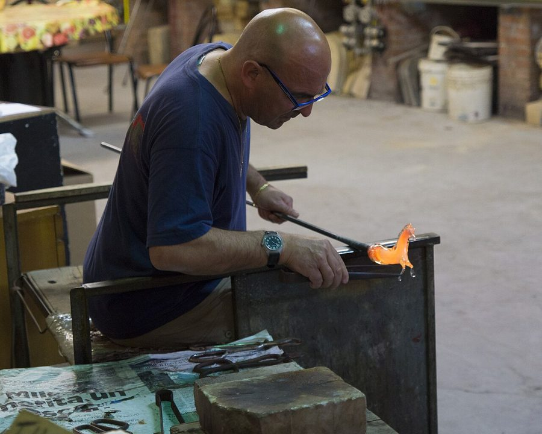
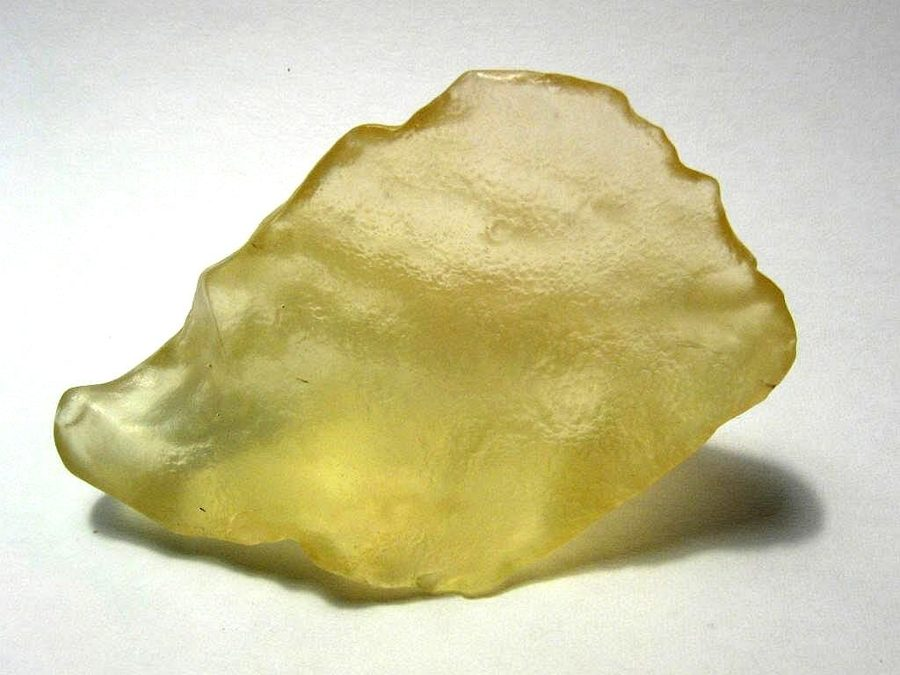
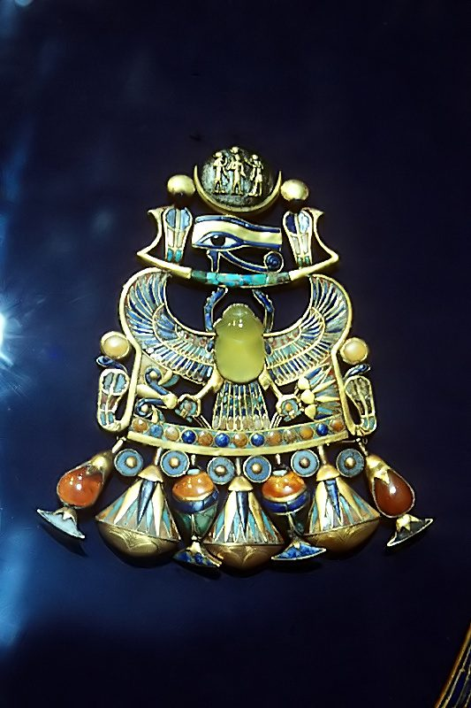
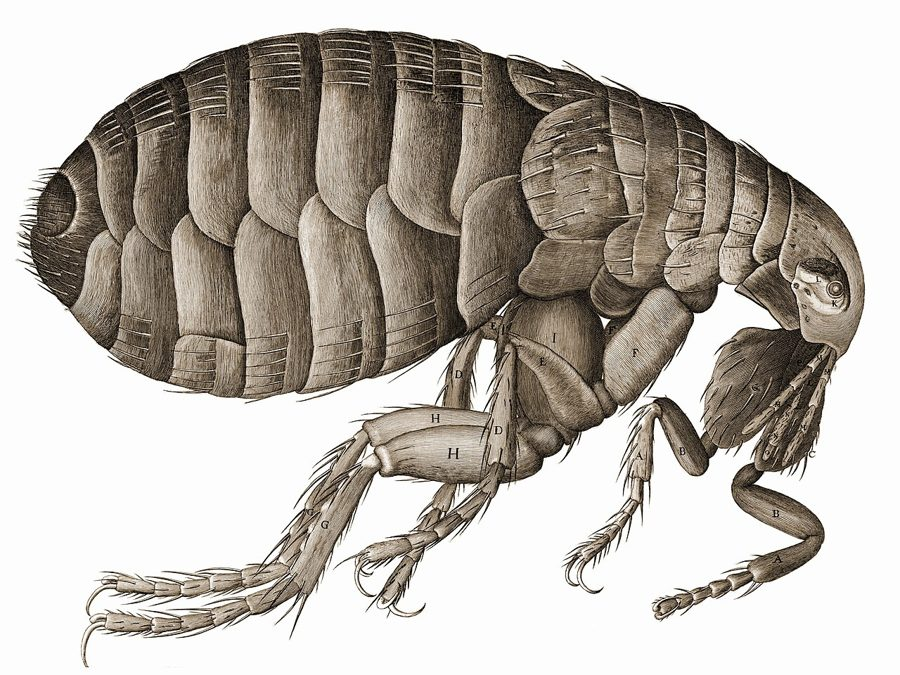
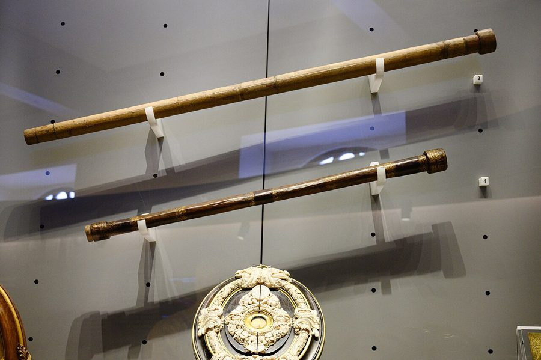
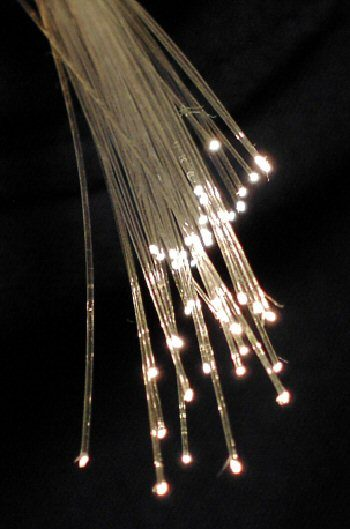
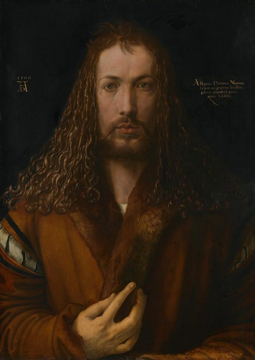
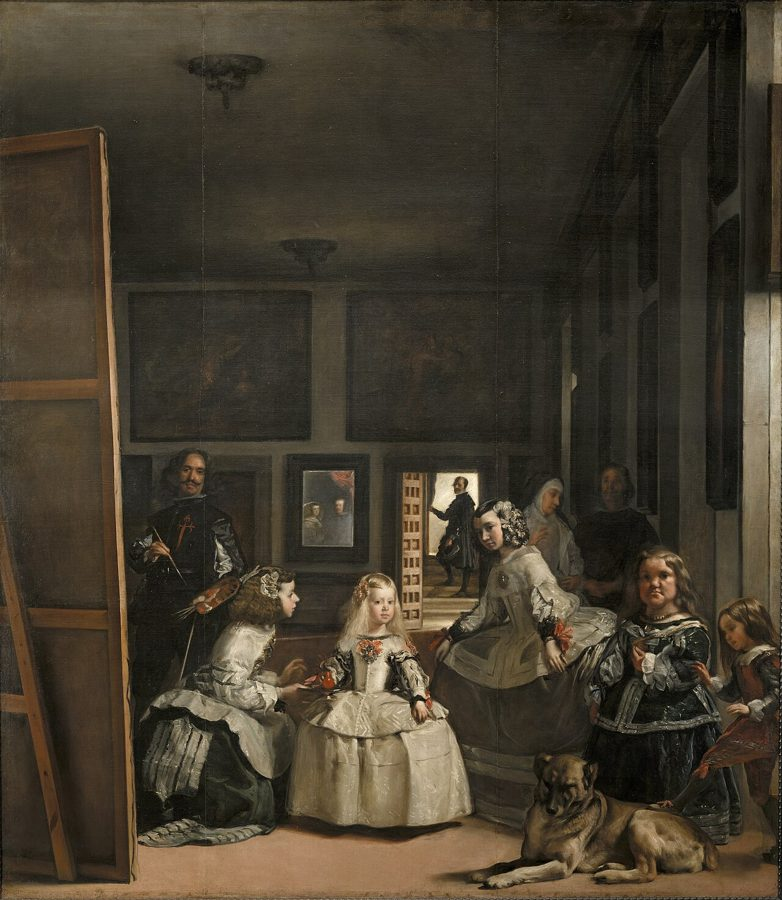

这一章在做什么
这一章从一种材料出发：二氧化硅，也就是玻璃。先讲它怎样在威尼斯的一座小岛上变得透明，然后分三路走：镜片一路通到细胞和木星的卫星，玻璃丝一路通到互联网，镜子一路通到自画像和「自我」。最后在山顶的望远镜汇合，再回到章首那块沙漠玻璃。
支线多，容易走丢。每换一节问自己两句：这回用的是玻璃的哪种性质（透明、能折光、结实、能反光）？是哪个不相干的领域推了它一把？

穆拉诺岛上的玻璃工匠，2014 年。烧软的玻璃是橙红色的，趁热才能塑形。这门手艺在这座岛上传了七百多年，是这一章主干的起点。
Miguel Mendez，CC BY 2.0，维基共享资源 因果链：这一章的蜂鸟效应
主干：从沙子到透明玻璃
天然玻璃当宝石 §1
罗马的器皿和窗 §1
工匠迁到威尼斯 §2
聚居穆拉诺岛 §2
极透明的玻璃 §2
前提：烧得到上千度、又控制得住的熔炉（§7 才点破）
镜片这一支（§3）：中间那一环来自别的领域
阅读用的放大玻璃 §3
眼镜（少数人用） §3
眼镜需求大涨 §3
成群的镜片行家 §3
从印刷这边接进来的一串：
印刷机 §3
识字的人大增 §3
发现自己看不清 §3
显微镜：细胞、细菌 §3
望远镜：木星的卫星 §3
相机、电影、电视 §3
另外两支（玻璃丝、镜子）在下一张图。
本站示意图。上：主干，从天然玻璃到穆拉诺的透明玻璃。下：镜片这一支。粗箭头是全章最出名的一环：印刷机并不造镜片，它只是让很多人头一回发现自己看不清小字。
另外两支：玻璃丝（§4），镜子（§5、§6）
玻璃 §2 之后
拉成丝： 用它结实
透明玻璃 背面镀金属
细玻璃丝 §4
玻璃纤维材料 §4
光纤通信 §4
互联网的骨干 §4
前两步用的是结实，不是透明
超纯的玻璃 §4
激光 §4
镜子 §5
自画像、透视法 §5
以个人为中心 §5
个人权利、小说 §5
拼接镜面望远镜 §6
宇宙早期的光 §6
虚线箭头：作者在这两步上特意留了余地，说的是「促成之一」，不是「造成」。
本站示意图。玻璃丝这一支有个回马枪：先是只用它的结实，过了大半个世纪，加上超纯玻璃和激光，才重新用上它的透明。镜子这一支的后半段是文化变化，作者自己打了折扣。 最出人意料的一跳在 §3：印刷机引出眼镜市场。两样东西没有技术上的联系，中间隔着的是人的眼睛。第二处是 §4：一根为了做测量仪器拉出来的细丝，隔了近百年，成了互联网的线路。§5 那一支读的时候留意作者的措辞，他在那里说的是「允许」，不是「导致」。
分节地图
原书这一章分 7 节，节与节之间是一条短横线，每节开头几个词是小型大写字母。读完一节回来打个勾。
Roughly 26 million years ago …约 500 词 开场：玻璃是什么、从哪来。抓住末尾的铺垫：早期用途都在意料之中。 THE SACKING of Constantinople …约 600 词 主干：透明玻璃的来历。论点是工匠挤在一座岛上，创新成了集体的事。 WHILE GLASSMAKERS such as Barovier …约 1500 词 全章核心的一条链：印刷机怎样带出眼镜、显微镜、望远镜。一环都别跳。 AS PROFESSORS GO, the physicist …约 1100 词 换一种性质：结实。抓住转折：纤维先不靠透明，后来又靠回透明。 IT’S EASY TO MAKE FUN of …约 1700 词 转到镜子：它和自画像、个人主义的关系。后半节是作者给因果加的限定。 THE DORMANT VOLCANO of Mauna Kea …约 600 词 镜片和镜子两支在山顶望远镜汇合。短，当作前几节的合流来读。 THE STORY OF GLASS reminds us …约 1200 词 收束：材料也在写历史；硅为什么等了这么久。章首的沙漠玻璃在这里有交代。
背景：作者默认你知道的事
这一章跨了八百年，人名地名一个接一个，作者多半只提一句。下面按出现的顺序补上，顺带标出几处书里说得不够准的地方。
§1 图坦卡蒙的胸饰和沙漠玻璃
一块利比亚沙漠玻璃，宽约 5.5 厘米，重 22 克。这种淡黄色的天然玻璃散落在埃及和利比亚交界的大沙海里。
H. Raab (User:Vesta)，CC BY-SA 3.0，维基共享资源 
图坦卡蒙墓里的那件胸饰，2002 年摄于开罗埃及博物馆。正中那只淡黄绿色的圣甲虫就是沙漠玻璃。
Roland Unger，CC BY-SA 3.0，维基共享资源 图坦卡蒙（Tutankhamun，美国人常叫 King Tut）是公元前 14 世纪的埃及法老，十几岁就死了。1922 年英国人霍华德·卡特打开他的墓，墓里的随葬品大体完好，轰动一时。墓里一件胸饰（pectoral）正中的圣甲虫（scarab）是淡黄绿色的，后来验出是这种沙漠玻璃。
书里说它在墓里躺了四千年；按他的年代算，是三千二百多年。
§2 1204 年：君士坦丁堡陷落君士坦丁堡（今天的伊斯坦布尔）当时是拜占庭帝国，也就是东罗马帝国的首都，欧洲最富的城市之一。1204 年，本该去打耶路撒冷的第四次十字军坐着威尼斯人的船掉头攻破并洗劫了它。
书里说工匠来自「Turkey」，用的是今天的地名：那时还没有土耳其这个国家，奥斯曼人到 1453 年才拿下这座城。
§2 威尼斯、总督和穆拉诺岛威尼斯当时是一个靠海上贸易立国的独立共和国，元首叫 doge（总督），由贵族推选，终身任职。穆拉诺（Murano）是主岛北面一公里多的小岛，1291 年的法令把玻璃熔炉都迁了过去。
工匠在岛上地位很高，但不许带着手艺离开共和国，外逃的人会被追究，书里那句带死刑的边界指的就是这个。cristallo 是意大利语的「水晶」。
§3 最早的眼镜，和书里说的「远视」
意大利特雷维索一座修道院里的壁画，托马索·达·摩德纳 1352 年画，一般认为是现存最早的戴眼镜的人像。画的是近一百年前的枢机主教，那时还没有眼镜，是画家替他戴上的。书里的图注写 1342 年。
Tommaso da Modena，公有领域，维基共享资源
眼镜 13 世纪末出现在意大利，发明人不详。作者说的 farsightedness，落到中年读书人身上多半是老花（presbyopia）：眼睛里的晶状体随年龄变硬，近处对不上焦。远视和老花都用凸透镜矫正，所以最早的眼镜全是凸透镜。
卢克莱修（Lucretius）是古罗马诗人，这里只是「难啃的拉丁文」的代表。
§3 这一节的五个人
麦克卢汉 Marshall McLuhan 加拿大媒介理论家，《古腾堡星系》是他 1962 年的书名。
扬森父子 Hans & Zacharias Janssen 荷兰米德尔堡的眼镜匠。显微镜是否由他们发明，史学界有争议。
胡克 Robert Hooke 英国皇家学会的实验主管，《显微图谱》的作者。
利伯希 Hans Lippershey 米德尔堡的眼镜匠，1608 年为望远镜申请专利。
伽利略 Galileo Galilei 看到木星有卫星，「天体都绕地球转」有了反例。

《显微图谱》里的跳蚤，1665 年。原书是一张要展开看的大折页。
Robert Hooke，公有领域，维基共享资源 
伽利略亲手做的两支望远镜，佛罗伦萨伽利略博物馆。就是两片镜片装在一根长筒的两头。
Zde，CC BY-SA 4.0，维基共享资源
书里说显微镜让人看见了病毒；病毒太小，要等 20 世纪的电子显微镜。
§4 博伊斯、威尔斯，康宁和贝尔实验室
一束光纤。光从另一头送进来，只在末端露出来，中途几乎不漏。
BigRiz，CC BY-SA 3.0，维基共享资源
博伊斯 Charles Vernon Boys 英国实验物理学家。细丝是给扭秤当悬丝、测微弱的力用的；他最后选中的是熔融石英丝，成分也是二氧化硅。
威尔斯 H. G. Wells 《时间机器》《世界大战》的作者，年轻时在伦敦学过理科。
康宁 Corning Glass Works 美国纽约州的玻璃公司，Pyrex 耐热玻璃和手机屏的大猩猩玻璃都是它的。
贝尔实验室 Bell Labs AT&T 的研究机构，晶体管、Unix、C 语言的出生地。
换算：ninety feet 约 27 米，half-mile 约 800 米。fiberglass 中文常叫玻璃钢或玻纤。
§5 画自己的人，和作者引的两位学者
丢勒 28 岁的自画像，1500 年。正面、对称、直视，这种画法当时多用来画基督。
Albrecht Dürer，公有领域，维基共享资源
丢勒 Albrecht Dürer 德国纽伦堡人。书里把他和威尼斯、荷兰放在一起；这两处他只是旅行时到过。
布鲁内莱斯基 Filippo Brunelleschi 佛罗伦萨的建筑师，借镜子演示了线性透视（近大远小，平行线汇到一点）。
芒福德 Lewis Mumford 美国技术史家。他说的「最有权势的君主」应指路易十四，凡尔赛宫的镜厅是他建的。
麦克法兰 Alan Macfarlane 剑桥的历史学家。书里他的姓有两种拼法，是同一个人。
美第奇 the Medici 佛罗伦萨的银行家族，这里指代出钱养艺术家的整个阶层。
§5 《宫娥》：画里的那面镜子
委拉斯开兹《宫娥》（Las Meninas ），1656 年前后。左边拿画笔的是画家本人。后墙正中偏左那块发亮的小方框是镜子，里面是国王和王后，也就是站在你这个位置的人。
Diego Velázquez，公有领域，维基共享资源 书里说整幅画是从两位被画的人的位置看出去的，对着图就明白了：观众站的地方，正是国王夫妇站的地方。书里叫它 inverted，是说它把画家和模特的位置调了个个儿。
这幅画一般归在巴洛克时期，比文艺复兴盛期晚一百多年，书里把它算进了 late Renaissance。
§6 莫纳克亚山和凯克望远镜
莫纳克亚山顶，凯克二号望远镜向夜空打出一束激光。它在高层大气里造出一颗人造的「导星」，给自适应光学系统当参照。
Paul Hirst，CC BY-SA 2.5，维基共享资源
莫纳克亚（Mauna Kea）是夏威夷大岛上的休眠火山。书里的 fourteen thousand feet 约 4270 米；从海底的山脚算起有一万米左右，所以说它比珠峰还「高」。inversion layer 是逆温层，像一个盖子把云压在山腰以下。
凯克天文台有两台一样的望远镜，各用 36 块六边形小镜拼成一面主镜。书里说拼出来宽 twenty-foot（约 6 米）；天文台自己给的主镜口径是 10 米。
§7 笛卡尔没发表的书，和 material 的两个意思笛卡尔 1630 年代初写过一部讲自然界的书《世界》（Le Monde ），听说伽利略被教廷定罪，就压下没出版。书里引的那段话，通行的出处是他 1637 年的《谈谈方法》，他在那里概述了这部书的内容。
辩证唯物主义（dialectical materialism）里的 material 指经济和阶级这些「物质基础」。作者要的是字面意思：材料、元素、原子。中国读者对前一个意思太熟，读到这里别带进来。
这一章的科学，先用中文过一遍
玻璃是什么：没排好队就被冻住
石英晶体：原子排得整齐
慢慢冷下来，来得及各就各位
熔化后 快速冷却
玻璃：乱着就被冻住
来不及归位：是固体，内部却像液体一样乱
本站示意图（只示意整齐和杂乱，不是真实的原子结构）。书里那句 a strange limbo between solid and liquid 说的就是右边这种状态。 沙子的主要成分是二氧化硅（silicon dioxide，SiO₂），天然的晶体形态叫石英。晶体里原子按固定图案重复排列。熔化以后原子乱跑；如果冷得够快，它们来不及回到整齐的位置就动不了了，这就是玻璃。它是固体，但内部是乱的，学名叫非晶态固体。
书里的温度是华氏度：32°F 是 0℃，500°F 约 260℃，1000°F 约 538℃。书里给二氧化硅的熔点（500°F 以上）偏低很多：纯石英要 1700℃ 左右才熔化，掺了助熔成分的普通玻璃，炉子也要烧到一千多摄氏度。
玻璃为什么透明：电子不收零钱
多数材料 + 可见光
台阶
光子
光子能量够一级台阶 被吸收，不透明
玻璃 + 可见光
台阶
光子
同样的光子，够不着 吞不下，光穿过去
玻璃 + 紫外线
台阶
光子
能量更高，够着了 被吸收
本站示意图。横线是电子能待的两个能级，粗箭头的长度是一个光子带来的能量。箭头够不到上面那条线，电子就不接这份能量，光照原样穿过去。 材料吸收光，是里面的电子把一个光子（photon）的能量整份吞下，跳到更高的能级。电子不能停在半路，能量只能一级一级地变，这就是「量子」（quanta）。可以把它想成一个只接受整额付款的接口：金额不够一级台阶，这笔钱原样退回。
二氧化硅的台阶特别高，可见光的光子不够格，所以直接穿过去。紫外线的光子能量更高。书里说隔着窗玻璃晒不黑就是这个道理；细说起来，普通窗玻璃挡掉的主要是紫外线里波长较短的那一段。
镜片怎样帮眼睛，两片排成一线又怎样
书上的字
视网膜 不戴眼镜：焦点落到视网膜后面 近处的字是糊的
凸透镜
加一片凸透镜：焦点回到视网膜上 镜片先帮着把光往里折一点
本站示意图（角度有夸张）。眼球前部的浅色椭圆是眼睛自带的晶状体，它本身就是一片透镜。老花和远视都是它折光的力气不够。 光从空气斜着进玻璃会拐弯，叫折射（refraction）。中间厚、边上薄的凸透镜（convex lens）把光线往中间折。眼睛看近处时折得不够，焦点就落到视网膜后面；眼前加一片凸透镜，先替它折一点，焦点就回来了。近视相反，用中间薄的凹透镜。
眼镜是两片镜片并排，一只眼一片。把两片前后排在一根筒里，第一片成一个像，第二片把这个像再放大，这就是显微镜和望远镜的基本结构。书里 lining up two lenses 那句讲的是这个区别。
光纤：把光关在玻璃丝里
包层：折射率低 纤芯：折射率高，光碰到边界就全部弹回来 激光进 另一头出
激光一亮一灭，就是 1 和 0
本站示意图。真实的纤芯比头发丝还细，光在里面要弹无数次。 书里没讲光为什么不从玻璃丝侧面漏出去。原理叫全反射（total internal reflection）：光从折射率高的材料斜着射向折射率低的材料，只要角度够平，就一点不漏地弹回来。光纤是两层玻璃，里面的纤芯折射率高，外面的包层低，光在纤芯里一路弹着往前走。
难处在纯度。普通窗玻璃叠厚了就不怎么透光，而光纤要让光跑几十公里。这就是书里 1970 年康宁那块超透明玻璃的分量。
英文 中文 一句话 silica / silicon dioxide 硅石 / 二氧化硅 沙子、石英和玻璃的主要成分，化学式 SiO₂。 silicon 硅 元素。芯片用的是提纯的单质硅，玻璃用的是它的氧化物。硅约占地壳质量的四分之一强；书里的 90% 更接近含硅矿物的占比。 quartz 石英 二氧化硅的天然晶体，透明的叫水晶（rock crystal）。 photon 光子 光的最小一份。颜色越偏紫，每份的能量越高。 quanta 量子（复数） 单数 quantum。能量只能按固定的份额变化，不能连续变。 ultraviolet 紫外线 比紫光波长更短、能量更高的光，眼睛看不见，会把人晒黑。 hyperopia / farsightedness 远视 看近处模糊。前一个是医学名，后一个是日常说法。 myopia / nearsightedness 近视 看远处模糊。§5 的引文里 myopia 是比喻用法。 amalgam 汞合金，汞齐 汞和别的金属形成的合金。老式镜子背面涂的是锡汞齐。 phosphor 荧光粉 被电子打中会发光的物质，涂在老式电视的玻璃屏内侧。不是磷（phosphorus）。 fiberglass 玻璃纤维，玻璃钢 很细的玻璃丝，或用它增强的塑料。结实、轻、绝缘。 fiber optics 光纤通信 用玻璃丝里的光脉冲传数据。 bandwidth 带宽 一条线路单位时间能传多少数据。 adaptive optics 自适应光学 用激光在高空造一颗「假星」当基准，测出大气造成的抖动，再让镜面实时微微变形把它抵消。 light-year 光年 光走一年的距离，是长度不是时间。看十亿光年外的星系，看到的是它十亿年前的样子。
词与短语
词条按在书里出现的顺序排，按节分组。斜体小字是它所在的那句话里的几个词，方便你在书里找到。
§1 Roughly 26 million years ago …
bleak
… the bleak, impossibly dry landscape …
荒凉的
也说前景「黯淡」：a bleak future 。
impossibly dry
… impossibly dry landscape that marks the …
干得出奇
impossibly 修饰形容词时是「到了难以置信的程度」，不是「不可能地」。
fuse
… melted and fused under an intense …
熔合成一体
名词是保险丝。保险丝的原理就是「熔断」。
happily
… Liquid water will happily re-form the …
很顺当地，毫不费劲地
拟人。说没有生命的东西 happily 做某事，是「一有条件就照做」。§5 还有一处 happily sell us more mirrors 。
limbo
… a strange limbo between solid and …
不上不下的中间状态
原是天主教神学里天堂地狱之间的「灵薄狱」。in limbo 是悬而未决。
the dawn of civilization
… obsessed with since the dawn of civilization …
文明之初
dawn 是黎明，引申为开端。
give or take
… ago, give or take a few millennia …
上下差不了（几千年）
口语里的「左右」。这里带点玩笑：误差以千年计。
stumble across
… desert stumbled across a large fragment …
偶然碰上
stumble 是绊一跤。§3 的 stumbled upon the idea 同义。
centerpiece
… as a centerpiece of a brooch …
正中最显眼的那一件
brooch 是胸针，读 /broʊtʃ/。
unearth
… until archeologists unearthed it in 1922 …
发掘出来
un + earth：从土里取出。也比喻翻出旧材料。
against all odds
… Against all odds, that small sliver …
几乎不可能，却偏偏成了
odds 是概率、赔率。sliver 是细长的小片。
find its way
… had found its way from the …
辗转到了
主语是东西时，意思是经过谁也说不清的路径最后到了某处。
the height of
… during the height of the Roman …
鼎盛时期
不是高度。at the height of summer 是盛夏。
cloudy
… sturdier and less cloudy than naturally …
浑浊，不透亮
说液体、玻璃时不是「多云」。sturdy 是结实。
lay the groundwork
… laying the groundwork for the shimmering …
打下基础，铺路
句尾的 -ing 短语补一句后果，是这本书最常见的句式。
populate
… that now populate city skylines around …
遍布，占满
本义是「居住于」。主语是楼、是东西时，就是到处都是。
versatile
… most versatile and transformative materials in …
用途多样的
说人是多才多艺。全章就是在给这个词举例。
§2 THE SACKING of Constantinople …
sack
… THE SACKING of Constantinople in 1204 …
洗劫（城市）
不是麻袋，也不是解雇。专指军队攻破城池后的劫掠。
send tremors rippling
… quakes that send tremors of influence …
余波传遍各处
把历史事件比作地震：quake（震）、tremor（余震）、ripple（一圈圈扩散）是一套比喻。
surge
… armies surge and retreat, the map …
涌上去
名词是「猛增」，这一章反复出现：a surge of creativity 、a surge in demand 。
practice one’s trade
… they began practicing their trade in …
干自己那门手艺
trade 这里是行当、手艺，不是贸易。practice 是从业，医生律师「执业」也用它。
arguably
… at that point arguably the most …
可以说是
是肯定的口气：有充分理由这么说。不是「有争议地」。
lucrative as it was
… But lucrative as it was, glassmaking …
尽管很赚钱
形容词 + as + 主语 + be，是让步，等于 although it was lucrative 。
not without its liabilities
… was not without its liabilities …
也不是没有坏处
双重否定，说得客气。liability 是不利因素，和 §4 的 asset 相对。
less appealing habit
… the less appealing habit of burning …
不那么招人喜欢的习惯
故意轻描淡写：把「动不动烧掉一片街区」说成一个小毛病。英语里叫 understatement。
unwittingly
… Unwittingly, the Venetian doges had created …
无意之中
和引言里的 inadvertently 同义。蜂鸟效应的标志词。
information spillover
… what economists call “information spillover.” …
信息外溢
spill over 是水满了溢出来。同行挤在一起，谁的新点子都会漏给邻居。
lineage
… family lineages were heavily intertwined …
家系，血统
intertwined 是缠绕在一起：这些家族互相通婚。
a collective affair
… Murano was a collective affair: something …
大家一起的事
affair 这里只是「事情」。前面的 genius 也不指天才人物，指这地方的过人之处。
ornate
… its ornate vases and other exquisite …
装饰繁复的
exquisite 是精美的。
creative class
… bring the creative class to their …
创意阶层
因美国学者理查德·佛罗里达 2002 年的书而流行的说法：城市要繁荣，得吸引设计师、工程师这类人。
armed with
… borders armed with the death penalty …
配备着（死刑）
玩笑说法。整句是反话：这套办法别学。
trial and error
… After years of trial and error …
反复试错
molten
… these ingredients to molten glass …
熔化的
melt 的旧过去分词，只用来说岩石、金属、玻璃这类高温熔化的东西。
struck by
… Struck by its resemblance to the …
被……打动，一眼注意到
strike 的过去分词。It strikes me that … 是「我忽然觉得」。
§3 WHILE GLASSMAKERS such as Barovier …
discrete steps
… energy only in discrete steps, known …
一级一级分开的台阶
discrete 是离散的，别和 discreet（谨慎的）混。程序员熟悉的「离散数学」就是它。
effectively
… what were effectively bulky magnifiers over …
实际上等于
不是「有效地」。作者很爱用：§5 的 effectively doesn’t exist 是「等于不存在」。
the province of
… almost exclusively the province of monastic …
……的专属领域
province 本义是省，引申为「某人管的那一块」。
all too apparent
… for spectacles was all too apparent …
再明显不过
all too + 形容词：到了让人难受的程度。apparent 这里是明显，不是「表面上的」。
route around
… religious theories routed around the official …
绕开
借的是网络用语：数据包遇到坏掉的节点就绕路走。subversive 是颠覆性的。
less celebrated
… had another, less celebrated effect: it …
不那么出名的
celebrated 作形容词是著名的，不是「被庆祝的」。冒号后面才是这一节的正题。
pool of expertise
… engendered a new pool of expertise …
一批懂行的人
pool 是可以随时取用的储备：talent pool 人才库，thread pool 线程池。
awash in
… was not just awash in lenses …
到处都是
字面是被水漫过。这句是 not just X, but also Y ，重点在后半：关于镜片的想法也到处都是。
the Continent
… printing press, the Continent was suddenly …
欧洲大陆
大写、带 the，是英国人的说法，指海峡对面的欧洲。
hackers
… These were the hackers of the …
爱折腾的行家
用的是褒义的老意思：拿到一样东西就想拆开改一改的人。
in line with
… but in line with each other …
前后排成一条直线
这里是字面意思，和前半句的 side by side （并排）对比。平时它多指「符合」。
sheaf
… a thin sheaf of cork and …
一薄片
本义是一捆（麦子、纸）。cork 是软木，酒瓶塞的材料。
not unlike
… yet it was not unlike a …
颇像
双重否定。这是胡克 1665 年的原话，exceeding plainly 是那时的写法，今天说 exceedingly。
legend has it
… Legend has it that one of …
据传
固定说法，同类还有 rumor has it 。作者用它表示自己不担保。
get word of
… Galileo got word of this miraculous …
听说，得到消息
word 不带冠词时是「消息」。
the march of science
… advanced the march of science in …
科学的进程
march 是行军，引申为稳步向前。the march of time 同理。
give way to
… Gutenberg galaxy giving way to the …
让位给
独立主格：名词 + -ing，补充说明前一句。glamour shot 是好莱坞式的明星美照。
to be sure
… To be sure, the story of …
诚然
让步的信号：先承认一点，后面必有 Yet 或 But。看到它就往下找转折。
§4 AS PROFESSORS GO, the physicist …
as professors go
… AS PROFESSORS GO, the physicist Charles …
拿教授的一般水平来衡量
as … go 是「就这一类而言」。As hotels go, it’s cheap ：按旅馆的标准算便宜。
restive
… his back on a restive audience …
坐不住的，不耐烦的
长得像 rest，意思相反。lousy 是口语的「差劲」。
gallop through
… galloped through an hour of talk …
飞快地赶完
gallop 是马飞奔。这是威尔斯的原话，mess about 是英式口语的「瞎鼓捣」。
bolt
… and bolted back to the apparatus …
一溜烟跑回
动词是猛冲。两段之后 bolt 又以名词出现，是弩箭。同一个词。
what he lacked in …, he made up for in …
… what Boys lacked in teaching ability …
在这方面的欠缺，由那方面补上
固定句型。make up for 是弥补。
shard
… a very fine shard of glass …
碎片，细条
多指玻璃、陶器的尖碎片。fine 这里是细，不是好。
such was the case with
… Such was the case with Boys’s …
……正是这样的例子
倒装，等于 The case with … was such 。前面讲一般规律，这句落到具体的人。
annals
… figure in the annals of innovation …
史册
本义是编年史。decidedly unorthodox 是「明摆着不按常理」。
if not more so
… as durable, if not more so …
即使不比它更（结实），也差不多
so 指代 durable。插在 as … as 结构中间，再加一码。
chronic
… and tolerated its chronic fragility …
长期改不掉的
医学上是「慢性的」。这里把易碎说成玻璃的老毛病。
flagship
… fuselage of Airbus’s flagship jet, the …
招牌产品
本义是舰队的旗舰。A380 是空中客车的双层客机，fuselage 是机身。
fatigue
… more resistant to fatigue and damage …
金属疲劳
工程用语：材料反复受力后出现裂纹。不是人累了。
the untutored eye
… look to the untutored eye to …
外行人的眼睛
untutored 是没受过训练的。这句的主干是 do not look … to be made of glass 。
asset
… glass fibers became an asset only …
长处，有用的东西
不是资产。only once 是「直到……才」：这句是 §4 的转折点。
not to mention
… not to mention the ships that …
更不用说
后面的 lay 是铺设（电缆），不是躺。
woven together
… is woven together out of threads …
织成
双关。Web 本义是网、织物，thread 是线：万维网真是用玻璃的「线」织的。
second nature
… this act almost second nature to …
习惯成自然的事
第二天性：熟到不用想。
all the way down
… silicon dioxide all the way down …
从头到尾每一环都是
套的是英语里的一个老笑话：大地驮在乌龟背上，乌龟下面呢？It’s turtles all the way down 。
§5 IT’S EASY TO MAKE FUN of …
storied
… a long and storied tradition behind …
有来历的，大有名堂的
来自 story（故事），不是楼层。penchant 是「偏好」，法语来的词。
convention
… exist as an artistic convention in …
惯例，约定俗成的做法
不是大会。程序员说的 naming convention 是同一个意思。
royalty
… painted landscapes and royalty and religious …
王室成员
不是版税。这里是集合名词：王公贵族。
part of the fabric of
… became part of the fabric of …
融进了……的肌理
fabric 是织物，比喻社会生活的基本结构。
start-up idea
… Gutenberg had the start-up idea of …
创业点子
故意用硅谷的词说 15 世纪的事。
sit for
… two royal subjects sitting for their …
坐着让人画（像）
这里的 subject 是「被画的对象」，不是臣民。royal subjects 就是被画的那两位王室成员。
naturally
… using mirrors, naturally, to write in …
不用说，当然
插入语，不是「自然地」。达·芬奇的笔记是左右反着写的，要对着镜子才好认。
no less … than
… more subtle, but no less transformative …
一点也不比……逊色
这句的骨架是 a reorientation that was more subtle, but no less transformative, than the reorientation … ，两个 reorientation 在比。
ruminate
… Hamlet ruminated onstage; the novel emerged …
反复琢磨
本义是牛羊反刍。指哈姆雷特那些长篇独白。
parlor trick
… a kind of conceptual parlor trick …
小戏法
parlor 是旧式的客厅。客厅里给客人变的小魔术，引申为巧妙的小把戏。
play well with
… self-centered world played well with the …
和……很合拍
原是说小孩「能和别人玩到一块」。self-centered 这里是中性的「以自我为中心」，不带贬义。
get caught up in
… it got caught up in a …
被卷进
后面的 positive feedback loop 是正反馈，positive 不是「好的」，是「越来越强」。句型是 It’s not that X, but that Y 。
artful
… has an artful way of describing …
巧妙的
不是「艺术的」。有时带贬义（狡猾），这里是夸。
constellation of ideas
… the particular constellation of ideas in …
一组彼此相关的观念
constellation 是星座，比喻凑在一起、构成某种图案的一组东西。
dictate the terms
… not exclusively dictating the terms of …
单方面说了算
terms 是条件、条款。not exclusively 是这句的要害：有份，但不是独裁。
patronage
… benefited from a patronage system that …
赞助，供养
patron 是出钱养艺术家的人。后面的 foraging for nuts and berries（采坚果浆果）是玩笑：不然就得自己找吃的。
count as
… That has to count as progress …
算得上
has to 这里是「不能不」：这总得算进步吧。短句，语气很重。
tip the scales
… we have now tipped the scales …
让天平倾斜
scales 是天平。too far in the direction of ：往……偏得太多。
§6 THE DORMANT VOLCANO of Mauna Kea …
dormant
… THE DORMANT VOLCANO of Mauna Kea …
休眠的
火山分 active、dormant、extinct（活、休眠、死）。
in a matter of hours
… feet in a matter of hours …
只要几个小时
a matter of + 时间：强调短。
barren
… the landscape is barren, almost Martian …
寸草不生的
Martian 是火星的。
as dry as it is thin
… is as dry as it is thin …
又干又稀薄
thin 说空气是稀薄。as A as it is B ：A 和 B 的程度一样高。
appropriately enough
… Appropriately enough, they also make it …
说来也巧，正合适
副词 + enough 放句首是评论语：oddly enough 、sure enough 。前一句说这里像外星，所以正好看星星。
crowned by
… Mauna Kea is crowned by thirteen …
顶上立着
crown 是王冠。山顶的东西像给山戴了冠。
outpost
… like some gleaming outpost on a …
前哨站
gleaming 是闪闪发亮。
would seem to be
… telescopes would seem to be a …
看上去像是
would seem 比 seem 更留余地，后半句的 only 就是转折：其实它不用镜片。
do their magic
… on lenses to do their magic …
发挥神奇的作用
也说 work its magic 。
pickup truck
… the size of a pickup truck …
皮卡
后面带敞开货厢的小卡车，美国最常见的车型之一，常被拿来当尺寸的参照。
vantage point
… There is no vantage point at …
观察的位置
were there no
… in the heavens were there no …
假如没有
省略 if 的倒装虚拟，等于 if there were no 。引言里的 Had there been 是同一种句式。
register
… what the telescopes actually register …
记录到，测到
仪器作主语时不是「注册」。
flex
… of the telescope to flex slightly …
弯曲，变形
flexible 的动词。
trinket
… started out as trinkets and empty …
不值钱的小饰物
start out as ：一开始只是。和下一句的 has become 对比。
perched
… perched above the clouds at the …
高踞在
本义是鸟停在高枝上。
§7 THE STORY OF GLASS reminds us …
play God
… Big Bang (or play God, depending …
扮演上帝，随意摆布
depending on your metaphor ：看你爱用哪个比喻，科学的还是宗教的。
might well
… small adjustment might well have made …
很可能
well 把 might 的把握加大了。整句：很可能一直到几千年前都毫无区别。
defining
… that defining twentieth-century compound, plastic …
最能代表（一个时代）的
不是「正在定义」。a defining moment 是决定性的时刻。
tweak
… Tweak those silicon electrons, and you …
稍微改动一下
祈使句 + and：表示条件，「只要……就」。不是在命令谁。
rob … of
… you rob the last thousand years …
使……失去
rob A of B ：从 A 那里夺走 B。被夺的东西在 of 后面，中文语序正好反过来。
strike at the foundation
… would strike at the foundation of …
动摇根基
strike at 是朝……打去。前一句的 edifice 是大厦，一句说表面，一句说地基。
never get around to
… that he never got around to …
一直没顾上，始终没做成
get around to doing ：终于腾出手来做某事。
the usual suspects
… focused on the usual suspects of …
每回都少不了的那几位
因电影《卡萨布兰卡》结尾的台词（把惯犯都抓起来）而出名。这里指历史书里的老主角：帝王、战争、天才。
not unheard of
… historical change is not unheard of …
并非没有先例
又一个双重否定。句末的 of course 提示后面要让步再转折。
primordial soup
… have done since the primordial soup …
原始汤
假说里孕育出最早生命的远古海洋。这里就是「自有生命以来」。
have much use for
… humans didn’t have much use for …
用得上
否定式常见。说人 have no use for 某物，还可以是「看不上」。
tinker with
… glassmakers began to tinker with its …
摆弄，鼓捣
tinker 本是走街串巷的补锅匠。
top billing
… the top billing would be the …
头牌，领衔主演
电影海报上名字排第一。这几句是一整套选角的比喻：cast、starring roles、top billing。
receive a credit
… have even received a credit …
在演职员表里挂上名
credit 是片尾字幕里的署名，不是信用、学分。意思是连个龙套都算不上。
promise
… hard to see the promise of …
潜力，前途
不是承诺。a promising student 是有前途的学生。
make it into
… Libyan Desert that made it into …
最终进了
make it 是成功抵达、办到。
alike
… geologists, and astrophysicists alike for decades …
都，同样
A, B, and C alike ：A、B、C 无一例外。副词，放在并列成分后面。
all the while
… And all the while, glass was …
从头到尾，一直
全章最后一句。point the way 是指路：玻璃自己一直在指向天上。
值得停下来的句子
New ways of measuring almost always imply new ways of making.— §4，博伊斯拉玻璃丝之前。本站译：新的测量方法，几乎总是意味着新的制造方法。
句子短，但它是 §4 的论点句，也是引言里「测量能力的突破」那一类蜂鸟效应的浓缩。imply 不是「暗示」，是逻辑上的「必然带出」：想量得更细，先得造出更细的工具。第 5 章讲钟表时这句话会再用上。
It’s easy to imagine a world with flowers but without hummingbirds. But it’s much harder to imagine a world without flowers but with hummingbirds.— §5，解释「允许」和「迫使」的区别。本站译：有花而没有蜂鸟的世界不难想象；没有花却有蜂鸟的世界，就难想象得多。
两句只调换了 with 和 without。这是作者给全书的因果下的定义：花是蜂鸟的必要条件，不是充分条件。套回本节：没有镜子，文艺复兴很难是那个样子；有了镜子，却不一定有文艺复兴。读到后面各章觉得作者说得太满时，回来看这一句。
The story of glass reminds us how our ingenuity is both confined and empowered by the physical properties of the elements around us.— §7 第一句，全章的总括。本站译：玻璃的故事提醒我们，人的聪明才智既受制于身边各种元素的物理性质，也得力于这些性质。
主干是 The story reminds us how … 。how 从句里是被动：ingenuity is both confined and empowered by … ，两个过去分词共用一个 by。confined（被限制）和 empowered（被赋能）是一对反义词，作者要你同时接住这两头：发明家不能想做什么就做什么，能做什么，材料先说了一半。
检查一下理解
先在心里答，再点开。答错的那题，回书里把对应那一节再读一遍。
1.（§1）作者说玻璃的早期历史 relatively predictable。这是在贬低罗马人吗？这句话在全章里起什么作用？ 不是贬低，是铺垫。罗马时代的用法（器皿、窗户）正是今天人人想得到的用法。作者先把「意料之中」的摆出来，后面几节讲的才是意料之外的。
2.（§2）威尼斯政府把工匠迁到穆拉诺，是为了促进创新吗？ 不是。目的是防火，同时把手艺留在自己手里。创新是没人计划的副产品，关键词是 Unwittingly。作者还开了句玩笑，说今天的市长别照这个办法学。
3.（§3）远视是印刷术造成的吗？印刷机到望远镜之间隔了哪几环？ 不是造成，是暴露。远视的人一直很多，不用看小字就察觉不到。书多了，读的人多了，才发现自己看不清，于是眼镜有了市场，市场养出一大批懂镜片的人，这些人摆弄镜片时做出了显微镜和望远镜。
4.（§3）节末作者说镜片影响媒体这条线 not terribly surprising。他为什么要自己拆台？ 这是让步，不是拆台。从眼镜到显微镜到相机，都还是「镜片」，顺着就能想到。他先承认这一点，是为了把下一节衬出来：玻璃还有一种和光毫无关系的性质。To be sure 后面跟 Yet，就是这个结构。
5.（§4）玻璃纤维最初派上用场，靠的是玻璃的哪种性质？§4 里的 Ironically 在说什么？ 靠的是结实，不是透明。讽刺之处在于：玻璃几千年来最被看重的就是透光，而用玻璃纤维做的东西大多根本看不出是玻璃。要等到人们想用光来传数字信号，透明才重新变成长处。
6.（§5）作者认为是镜子造就了文艺复兴吗？他举日本的钢镜和美第奇，各是为了说明什么？ 不认为。他的说法是镜子「允许」而不是「迫使」，它和别的社会力量互相加强。日本的例子说明有镜子不等于有同样的结果；美第奇的例子说明还得有人出钱养着这些画家和学者。两个例子都在给镜子的作用设上限。
7.（§5）节末谈到个人主义是好是坏，作者站哪一边？ 他只肯定一点：以个人为本的法律带来了人权传统，这算进步。至于今天是否偏得太远，他说这是另一类问题，要靠价值判断，可能永远没有定论。这和引言里「只讲变化怎么来的，不评好坏」的立场一致。
8.（§7）硅在地壳里到处都是，为什么生命几乎不用它，人类也到一千年前才大用？这一节的蜂鸟效应是谁引出谁？ 作者的推测是温度：二氧化硅有意思的性质要到很高的温度才显出来，地表没有这么热，进化碰不到。人学会在熔炉里造出可控的高温，才把它解锁。所以这里是熔炉引出了玻璃的全部后续，熔炉才是这一章真正的起点。